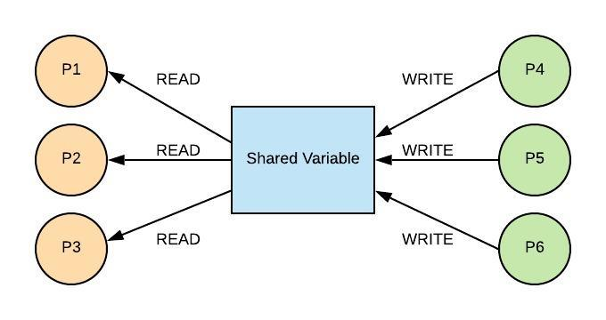

04 Prepare: Finding Defects Using Tests and Queues
Overview
This week you will explore technique of testing to help you find defects in code. You will practice your skills at finding defects via tests using code that implements the Queue data structure (ref: Syllabus Course Outcome 4). You are still in the PREPARE phase of the course.

Here is the two-day plan for this lesson:
Day 1 - Complete the reading below. The reading should take one hour to complete. For on-campus students, class time will be used to discuss the reading and explore examples. Online students should spend an additional hour communicating with other students in Slack and reviewing any examples or information provided by your instructor. You should begin to work on 04-Prove independently. You should plan on the assignment taking three hours to complete.
Day 2 - You will work with your study group to complete 04-Teach which will contain practice problems similar to your individual assignment. On-campus students will complete this activity during class time. The activity should take one hour to complete. You should finish work on 04-Prove independently.
The Queue Data Structure
During the last lesson, you learned about the Stack. The Stack was "Last In, First Out" (LIFO) and was implemented using the Python list. The Queue is characterized as "First In, First Out" (FIFO) and can also be implemented using the Python list.
Grocery Story Queue
In the example below, we can see a line at a busy grocery store used to represent a Queue. The person next in line for the cashier is called the front and the person at the end of the line is called the back. When the person at the front is removed from the Queue was call this a dequeue operation. When a new person joins the Queue at the back, we call this a enqueue operation. Note that someone can not cheat and enter the line in the middle of the Queue.

Queues are used when we need to process a collection of requests in an orderly and fair way. Consider the following two common Queues used in software: the Web Server Queue and the Reader/Writer Queue.
Web Server Queue
A web server receives numerous HTTP requests for web pages from clients throughout the world. Each request requires the web server to send back information. The amount of time it takes to send that information makes it difficult to respond timely to all requests. This would be similair to a customer service desk that had only one phone. If the customer service agent is helping someone else, then no one would pick up your call. To solve the problem, a queue is used to pick up all the phone calls and transfer you to the customer service agent when they were ready for the next person.

The web server does the same thing. When a request is sent, it is put into a Queue until the web server can process the request. In this way, all requests are received and none of them are lost. Queues frequently have a self-imposed maximum size. If a Queue is full, then the software may need to send an error message back to the client.
Reader/Writer Queue
Frequently we have the need to run different software components concurrently (e.g. looks like they are running at the same time). Each component is called a Process or a Thread (if your curious, you can read about how this is done in Python here). Each process will likely have their own set of variables that are maintained. Frequently, there is need to have shared data between the processes. The diagram below shows a variable which is being shared by multiple processes.
Processes P1 through P6 are all trying to use the variable at the same time. Processes P1, P2, and P3 are reading the variable and Processes P4, P5, and P6 are writing to the variable. The concurrent reading is not a problem. However, if everyone tries to both read and write at the same time, new and modified values may be missed or overwritten. One solution is to protect the code that that is writing to the shared data so that only one process can change the variable at a time. A Queue is used to ensure order and integrity. When a process wants to write, it is enqueued. When a process is dequeued, it is then allowed to modify the shared variable. When the process is done, then the next process is dequeued.
Queues in Python
In Python, a Queue can be represented using a list. To dequeue an item from the front of the Queue, [0] can be used to obtain the first item and also delete it from the list. To enqueue an item to the back of the Queue, the append function can be used on the list. The size can be determined by using the len function on the list. The performance of the Queue using a Python list is based on the performance of the dynamic array.
| Common Queue Operation | Description | Python Code | Performance |
|---|---|---|---|
| enqueue(value) | Adds "value" to the back of the Queue | my_queue.append(value) | O(1) - Performance of adding to the end of dynamic array |
| dequeue() | Remove and return the item from the front of the Queue | value = my_queue[0] del my_queue[0] |
O(n) - Performance of removing from the beginning of dynamic array |
| size() | Return the size of the Queue | length = len(my_queue) | O(1) - Performance of returning the size of the dynamic array |
| empty() | Returns true if the length of the Queue is zero. | if len(my_queue) == 0: | O(1) - Performance of checking the size of the dynamic array |
The Python library also includes a class called deque which stands for Double Ended Queue which is more frequently used due to better performance. We will learn more about this in the future when we study Linked Lists.
Finding Defects Using Testing
The best time to find a defect is while you are "in-phase". This means that before you delivery your software to the customer, you want to identify as many errors as possible. It is much more expensive to fix errors if the software has already been delivered to the customer. The 2 most common methods for finding defects are:
Code Review
Testing
Even the best code reviewers may not be able to analyze in their mind all the different scenarios that the software will exeute within. Testing using a systematic approach to verifying that code does what it was supposed to do. Often times your will write code to test your code. Consider a program that was supposed to determine if a year was a leap year. The requirements of a program would be:
Every 4 years shall be a leap year.
Every 100 years shall not be a leap year.
Every 400 years shall be a leap year.
Based on these requirements, you can write some test cases. Notice that you are not writing test cases based on what the code. If there is an error in the code, you may incorrectly write the test case based on the faulty code. Instead, you may come up with the following:
Test 1
- Scenario: Year 1996 (multiple of 4 but not multiple of 100 or 400)
- Expected Result: True
Test 2
- Scenario: Year 1900 (multiple of 4, multiple of 100, not multiple of 400)
- Expected Result: False
Test 3
- Scenario: Year 2000 (multiple of 4, multiple of 100, multiple of 400)
- Expected Result: True
Test 4
- Scenario: Year 2003 (not multiple of 4, 100, or 400)
- Expected Result: False
Notice that each test has a detailed Scenario and Expected Result based on the requirements. If you were given a function called is_leap_year, you could write test code as follows:
result = is_leap_year(1996)
print(result)
result = is_leap_year(1900)
print(result)
result = is_leap_year(2000)
print(result)
result = is_leap_year(2003)
print(result)
When you run your test code, if anything fails then you look for code related to the test that failed.
Instead of printing out the results, test code in Python can use the assert function. If the assert function fails, then the program will exit and tell you which test (e.g. assert statement) failed. For example:
assert is_leap_year(1996) == True
assert is_leap_year(1900) == False
assert is_leap_year(2000) == True
assert is_leap_year(2003) == False
For more complicated programs, a single test scenario may require you to call multiple functions to properly setup the scenario. For example, if were were testing the enqueue and dequeue functions of a Queue class, we might enqueue 3 numbers and then dequeue the 3 numbers to ensure that they came out in the correct order. The test code may look like the following:
# Test 1
# Scenario: Ensure that after adding 3 items to the queue, they can be
# removed in the proper order
# Expected Result: 100, 200, 300
print("Test 1")
queue = Queue()
queue.enqueue(100)
queue.enqueue(200)
queue.enqueue(300)
result = queue.dequeue()
print(result)
result = queue.dequeue()
print(result)
result = queue.dequeue()
print(result)
In addition to finding defects, testing also has the benefit of helping the programmer better understand the requirements of the software. Whether you wrote the code or another engineer wrote the code, the process of writing test scenarios will increase your understanding of what the software should do.